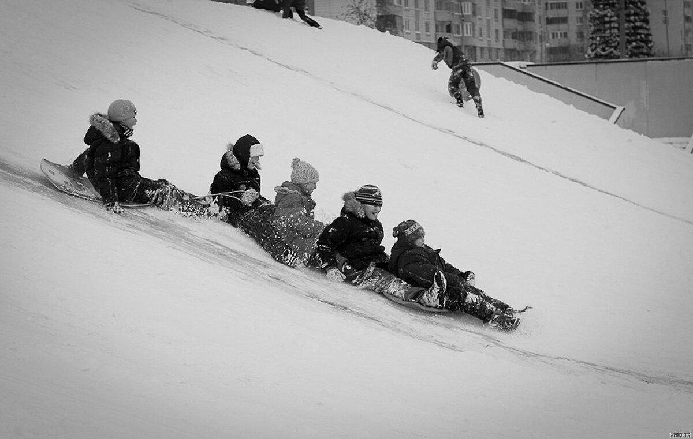

3 нарциссические манипуляции для роста зубов

3 нарциссические манипуляции, через которые можно восстановить свои зубы.
автор Антон Казаков
В данной статье я поделюсь секретом того, откуда брать энергию для творчества и не только. Иногда я пользуюсь этим лайфхаком, чтобы писать тексты, как этот. Иногда для проведения эфиров в Психостоматологии №1. А один раз на этой энергии я даже создал скромный психологический проект, который принес мне более 3 миллионов рублей.
Не знаю, насколько вы подкованы в теме нарциссизма, поэтому на всякий случай дам вводную часть.
Об этом нюансе мы с вами поговорим на примере интернет троллинга. Ничем другим нарциссические манипуляции называть не стоит, иначе можно слишком глубоко уйти в умные и бесполезные психологические рассуждения.
Не знаю, насколько вы подкованы в теме нарциссизма, поэтому на всякий случай дам вводную часть.
- Нарциссами я называю людей с проблемной самооценкой, которые добывают свою значимость за счет других.
- Добыча значимости идет через так называемую нарциссическую подпитку, которая является человеческой энергией.
- Человеческая энергия может быть как словами восхищения, сочувствия, одобрения, так и эмоциональными реакциями в ответ на определенные манипулятивные провокации.
- Если вас можно развести на эмоциональную реакцию, вы - лох. Но есть нюанс!
Об этом нюансе мы с вами поговорим на примере интернет троллинга. Ничем другим нарциссические манипуляции называть не стоит, иначе можно слишком глубоко уйти в умные и бесполезные психологические рассуждения.
Тро́ллинг — форма социальной провокации или издевательства в сетевом общении. Цель троллинга — вызвать ответную реакцию.
Если у вас есть проблемы с зубами, то вам наверняка знакомы такие моменты, когда рождается ответная реакция на чьи-либо слова. В эти моменты спокойствие, благодать и обычная жизнь отходят на задний план, внутри включается какой-то механизм, который переносит всё внимание и всю энергию в одно конкретное русло. У одних рождается желание доказать свою точку зрения и поставить на место того, кто не прав. У других появляется желание подчиниться и спрятаться в норку.
Одно время я использовал эту реакцию для того, чтобы слить свою энергию и подпитать провокатора. Однако позже я обнаружил, что гораздо лучше её использовать для творчества и развития. Если раньше я терял свою улыбку и зубы, то теперь, наоборот, те же самые ситуации вызывают укрепление моей улыбки.
Если вам знакомо чувство эмоционального опустошения/подавленности после коммуникации с кем-то из своего окружения, то скорее всего это говорит о следующем:
Наша энергия, внутренняя сила, либидо - это всё является ресурсом, который дается нам для реализации себя в этом мире. Однако, этот ресурс настолько ценен, что и другие люди не брезгуют на него претендовать. Особенно, если он может упростить им жизнь. Мы не просто так разрушаем свои зубы, мы делаем это для кого-то.
Поэтому, если вы всерьез задумываетесь о регенерации зубов, задумайтесь для начала о следующих вопросах:
Зачем вам следовать за своей мечтой, если вы уже прекрасно следуете за чужой?
Зачем вам чувствовать себя хорошо, если вам важнее, чтобы хорошо чувствовал себя кое-кто другой?
Зачем вам быть хорошим для себя, если вы стараетесь быть хорошим для других? Вы же хороший человек?
Одно время я использовал эту реакцию для того, чтобы слить свою энергию и подпитать провокатора. Однако позже я обнаружил, что гораздо лучше её использовать для творчества и развития. Если раньше я терял свою улыбку и зубы, то теперь, наоборот, те же самые ситуации вызывают укрепление моей улыбки.
Если вам знакомо чувство эмоционального опустошения/подавленности после коммуникации с кем-то из своего окружения, то скорее всего это говорит о следующем:
- кто-то знает, что нужно сказать или как посмотреть, чтобы вызвать у вас реакцию, лишающую улыбки;
- вас будут провоцировать снова и снова;
- у вас есть талант, миссия, путь, который нуждается в вашей энергии больше, чем тот тролль-нарцисс, которому вы отдаете свою энергию.
Наша энергия, внутренняя сила, либидо - это всё является ресурсом, который дается нам для реализации себя в этом мире. Однако, этот ресурс настолько ценен, что и другие люди не брезгуют на него претендовать. Особенно, если он может упростить им жизнь. Мы не просто так разрушаем свои зубы, мы делаем это для кого-то.
Поэтому, если вы всерьез задумываетесь о регенерации зубов, задумайтесь для начала о следующих вопросах:
Зачем вам следовать за своей мечтой, если вы уже прекрасно следуете за чужой?
Зачем вам чувствовать себя хорошо, если вам важнее, чтобы хорошо чувствовал себя кое-кто другой?
Зачем вам быть хорошим для себя, если вы стараетесь быть хорошим для других? Вы же хороший человек?
3 королевских манипуляции: страх, обязательства, вина.
Парадокс хорошего человека заключается в том, что он всегда знает, как ведет себя плохой человек. От кого же, от кого обычный человек узнал о том, что надо быть хорошим и не надо быть плохим? От кого же хороший человек узнал о том, что надо чувствовать по отношению к плохим людям? Может об этом рассказывали в школе на уроке «Хорошеведение»?
Когда мы пытаемся быть «хорошими» вопреки своим истинным желаниям, у нас включается когнитивный диссонанс. Это создает напряжение не только в психике, но и в теле. Неслучайно специалисты психостоматологии отмечают: правильная работа с коммуникативными паттернами помогает избавиться от многих телесных зажимов, а также кариеса и бруксизма. В результате такой работы становится особенно заметно, как много энергии мы тратим на поддержание образа «хорошего человека».
Если и вы относите себя к «хорошим», то сейчас самое время спросить себя: кто же являлся первым выгодоприобретателем вашей хорошести. Вы же знаете, кому выгодно, что вы играете роль хорошего человека? Это те же самые люди, которым не уперлось ваше счастье.... Звучит это, конечно, грубо, но вы же и сами прекрасно понимаете, как вам становится, когда ваши близкие ведут себя хорошо. Да? Как бальзам на душу. Мы можем сколько угодно говорить о том, что нам важно счастье наших родных, но когда их счастье мешает нашему спокойствию или угрожает нашей самооценке, начинаются разговоря о том, что такое хорошо и что такое плохо.
Вы знаете, как мы делаем других хорошими? Или вы всё же прогуливали «Хорошеведение» в третьем классе? 🙄😉 Можете не отвечать, так и быть, я сам всё расскажу. Мы дрессируем хорошесть других также, как и другие дрессировали нашу: через страх, обязательства и вину. Разберем на примерах?
Страх.
Обязательства.
Вина.
Знакомо?
Кто-то называет это нарциссическими манипуляциями, я же предлагаю сделать переоценку и назвать это психологическим троллингом. Во-первых, это больше соответствует концепции естественного отбора в обществе. Во-вторых, в психостоматологических экспериментах было подтверждено, что подобные фразы могут приводить, как к подчинению одного индивида другому, так и к развитию эмоциональной и психологической устойчивости.
Грубо говоря, эти провокации являются современным инструментом естественного отбора и отделяют слабых духом от сильных духом, т.е. не являются исключительно инструментом для подчинения и создания «хороших» мальчиков и девочек. И поэтому я предлагаю переоценить три типа вышеописанных провокаций из чего-то плохого во что-то хорошее.
Когда мы пытаемся быть «хорошими» вопреки своим истинным желаниям, у нас включается когнитивный диссонанс. Это создает напряжение не только в психике, но и в теле. Неслучайно специалисты психостоматологии отмечают: правильная работа с коммуникативными паттернами помогает избавиться от многих телесных зажимов, а также кариеса и бруксизма. В результате такой работы становится особенно заметно, как много энергии мы тратим на поддержание образа «хорошего человека».
Если и вы относите себя к «хорошим», то сейчас самое время спросить себя: кто же являлся первым выгодоприобретателем вашей хорошести. Вы же знаете, кому выгодно, что вы играете роль хорошего человека? Это те же самые люди, которым не уперлось ваше счастье.... Звучит это, конечно, грубо, но вы же и сами прекрасно понимаете, как вам становится, когда ваши близкие ведут себя хорошо. Да? Как бальзам на душу. Мы можем сколько угодно говорить о том, что нам важно счастье наших родных, но когда их счастье мешает нашему спокойствию или угрожает нашей самооценке, начинаются разговоря о том, что такое хорошо и что такое плохо.
Вы знаете, как мы делаем других хорошими? Или вы всё же прогуливали «Хорошеведение» в третьем классе? 🙄😉 Можете не отвечать, так и быть, я сам всё расскажу. Мы дрессируем хорошесть других также, как и другие дрессировали нашу: через страх, обязательства и вину. Разберем на примерах?
Страх.
- никто не будет с тобой дружить, если …
- тебе надо ответить прямо сейчас или …
- а что люди скажут, ты подумал(а) …
Обязательства.
- после всего, что я сделала для тебя …
- а вот настоящий друг сделал бы …
- если бы тебе правда было важно …
Вина.
- не могу поверить, что ты делаешь это со мной …
- видимо теперь мне придется делать всё самой …
- мне больно от того, что ты делаешь …
Знакомо?
Кто-то называет это нарциссическими манипуляциями, я же предлагаю сделать переоценку и назвать это психологическим троллингом. Во-первых, это больше соответствует концепции естественного отбора в обществе. Во-вторых, в психостоматологических экспериментах было подтверждено, что подобные фразы могут приводить, как к подчинению одного индивида другому, так и к развитию эмоциональной и психологической устойчивости.
Грубо говоря, эти провокации являются современным инструментом естественного отбора и отделяют слабых духом от сильных духом, т.е. не являются исключительно инструментом для подчинения и создания «хороших» мальчиков и девочек. И поэтому я предлагаю переоценить три типа вышеописанных провокаций из чего-то плохого во что-то хорошее.
Из провокации к вдохновению.
Обычно, когда мы сталкиваемся с чем-то плохим, у нас рождается тревожное состояние, которое поскорее хочется убрать. Все это характеризуется негативным возбуждением, неуверенностью и отсутствием контроля. Когда мы впадаем в тревожное состояние, то автоматически фокусируемся на негативных перспективах, что в свою очередь приводит к уменьшению уверенности, желанию избежать дискомфорта и ухудшению когнитивных функций. Простыми словами, при стрессе мы тупеем, слабеем и становимся более трусливыми.
Когда мы попадаем в стрессовую ситуацию, то по заветам предков, друзей и всякого рода гуру-экспертовичей мы стремимся успокоиться. Кто-то успокаивает себя привычным «все будет хорошо», кто-то дышит маточкой, кто-то заедает - в общем, кто на что горазд. Но есть и другой способ. Его как обычно нашли ученые, которые предложили переоценивать тревожность в азарт.
Азарт характеризуется позитивным возбуждением и оптимизмом. Это состояние рождает фокусировку на потенциально позитивных перспективах, а также более позитивно сказывается на когнитивных функциях, чем тревожность. Короч ученые решили проверить: а что если лучше не успокаиваться во время стресса, а наоборот расценивать это как возможность стать круче? Что если переоценить тревожность в азарт, то есть не переходить из возбуждения в спокойствие, а переходить из возбуждения в возбуждение?
Оказалось, что в серии экспериментов успешнее оказались те испытуемые, которые из тревожности шли в азарт, а не в спокойствие. Их показатели оказались лучше и в публичных выступлениях, и в экзаменах… Подробнее, можно прочитать в работе Элисон Брукс из Гарвардской Бизнес Школы. А в рамках данной статьи я предлагаю просто позаимствовать этот подход и перенести его в работу с нарциссическими провокациями!
Когда мы попадаем в стрессовую ситуацию, то по заветам предков, друзей и всякого рода гуру-экспертовичей мы стремимся успокоиться. Кто-то успокаивает себя привычным «все будет хорошо», кто-то дышит маточкой, кто-то заедает - в общем, кто на что горазд. Но есть и другой способ. Его как обычно нашли ученые, которые предложили переоценивать тревожность в азарт.
Азарт характеризуется позитивным возбуждением и оптимизмом. Это состояние рождает фокусировку на потенциально позитивных перспективах, а также более позитивно сказывается на когнитивных функциях, чем тревожность. Короч ученые решили проверить: а что если лучше не успокаиваться во время стресса, а наоборот расценивать это как возможность стать круче? Что если переоценить тревожность в азарт, то есть не переходить из возбуждения в спокойствие, а переходить из возбуждения в возбуждение?
Оказалось, что в серии экспериментов успешнее оказались те испытуемые, которые из тревожности шли в азарт, а не в спокойствие. Их показатели оказались лучше и в публичных выступлениях, и в экзаменах… Подробнее, можно прочитать в работе Элисон Брукс из Гарвардской Бизнес Школы. А в рамках данной статьи я предлагаю просто позаимствовать этот подход и перенести его в работу с нарциссическими провокациями!
Огнище! Вот это заряд! Погнали!
Если у вас был опыт катания на санках с горок, то может быть вы также помните, как круто, когда тебя сзади кто-то ещё и подталкивает. А может и нет. Может быть вы были тем, кто поднимался на горку и ругался на того, кто вас подталкивал, а потом и вовсе решали, что горки - это не ваше.

Так или иначе, жизнь очень похожа на горки и катание на санках. Одни получают от неё кайф, другие заботятся о безопасности, третьи просто ее избегают. И если с одной стороны вас тянет кататься с горки, а с другой стороны кто-то провоцирует на то, что будут последствия, то знайте - эта провокация не случайна! И она не для того, чтобы уберечь вас от вашей жизни, а для того, чтобы подтолкнуть в неё.
И если вы любите бороться с манипулирующими троллями или соглашаться с их вбросами, то я предлагаю вам вариант получше - использовать их провокации для подтверждения правильности своего выбора.
И если вы любите бороться с манипулирующими троллями или соглашаться с их вбросами, то я предлагаю вам вариант получше - использовать их провокации для подтверждения правильности своего выбора.
— Не нравится?
— Нет.
— Значит, точно хит будет.
Цитата из фильма «Руки вверх!»
Резюме
Путь героя, описанный Джозефом Кемпбеллом, четко говорит о том, что в жизни каждого человека есть зов в увлекательное, опасное и неизвестное, от которого его будут удерживать разные силы. Чаще всего эти силы предстают в виде близких, желающих только добра, людей. Реже эти силы проявляются в виде людей, которые открыто заинтересованы в нашей эксплуатации.
«Это не твое», «да кому это сейчас нужно», «а как же семья» и прочие фигуры манипуляции на страхе, вине и обязанностях будут звучать из уст доброжелателей. Помните, либо вы отдадите им свою радость, свою энергию, в виде борьбы или подчинения, либо вы скажете: Огонь! Погнали!
Помните: грубость, высокомерие, самодовольство, недовольство, критика идут только от менее радостных к более радостным, только снизу вверх. Используйте их как ориентир и вдохновение. Если вас хотят поиметь, значит в вас что-то есть. Если вас хотят остановить, значит есть, от чего останавливать. Если вас хотят подчинить, значит пришло время ответить себе на вопрос: а что если это для вдохновения?
«Это не твое», «да кому это сейчас нужно», «а как же семья» и прочие фигуры манипуляции на страхе, вине и обязанностях будут звучать из уст доброжелателей. Помните, либо вы отдадите им свою радость, свою энергию, в виде борьбы или подчинения, либо вы скажете: Огонь! Погнали!
Помните: грубость, высокомерие, самодовольство, недовольство, критика идут только от менее радостных к более радостным, только снизу вверх. Используйте их как ориентир и вдохновение. Если вас хотят поиметь, значит в вас что-то есть. Если вас хотят остановить, значит есть, от чего останавливать. Если вас хотят подчинить, значит пришло время ответить себе на вопрос: а что если это для вдохновения?
Надоело бесконечно лечить зубы у стоматолога? Приходи на бесплатную диагностику и узнай, как ещё ты можешь позаботиться о своей улыбке!